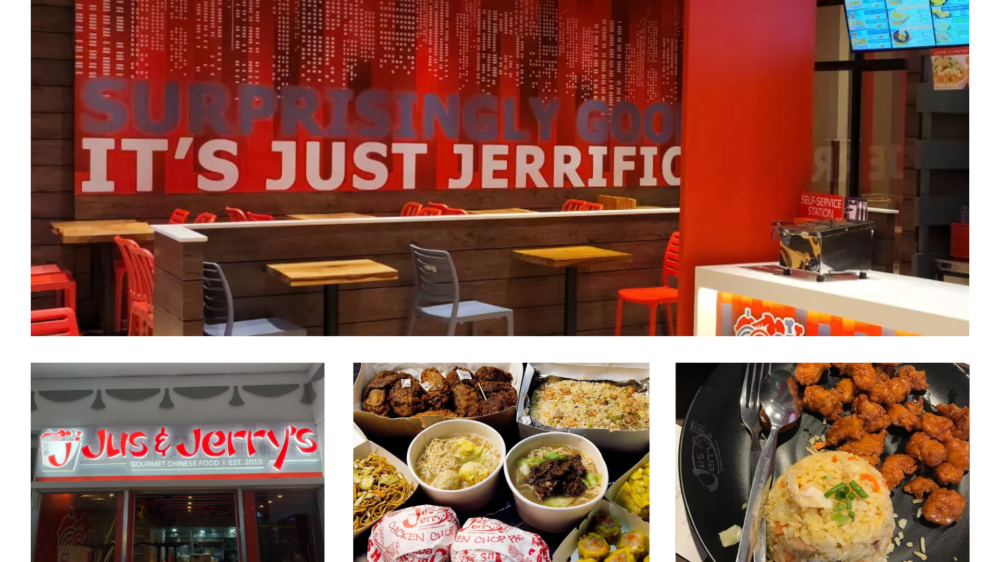

Jus & Jerry's EGI Taft
Chinese Restaurant
Located In: EGI Taft Tower
Address: EGI Taft Tower, Unit 112 G/F
Opening Hours: 10:30 AM - 7:00 PM

Sungchan Jung
@suncgh4njung
Justin
@justin
Thank you for your glowing recommendation! We're thrilled to be recognized for offering the best Chinese food, especially considering the value for money. We appreciate your feedback and are delighted that you enjoyed our Yang Chow, Chow Mein, and Garlicky Soy Garlic chicken. Looking forward to serving you again soon!
For the price, Jus & Jerry's offers the best Chinese food not just in La Salle or Taft area, but it's the best Chinese food for the price, period. While I wish the place was roomier, you can't really ask for more since they really get the food right. I highly recommend the Yang Chow, the Chow Mein, and their Garlicky Soy Garlic chicken.